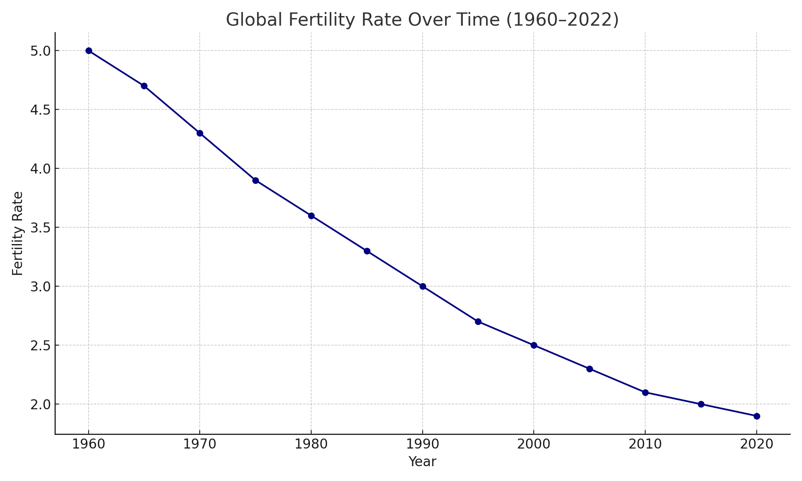
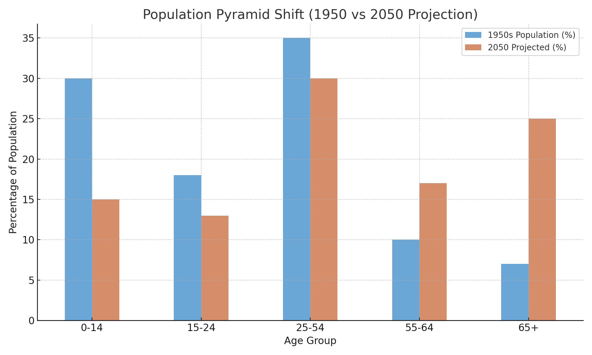
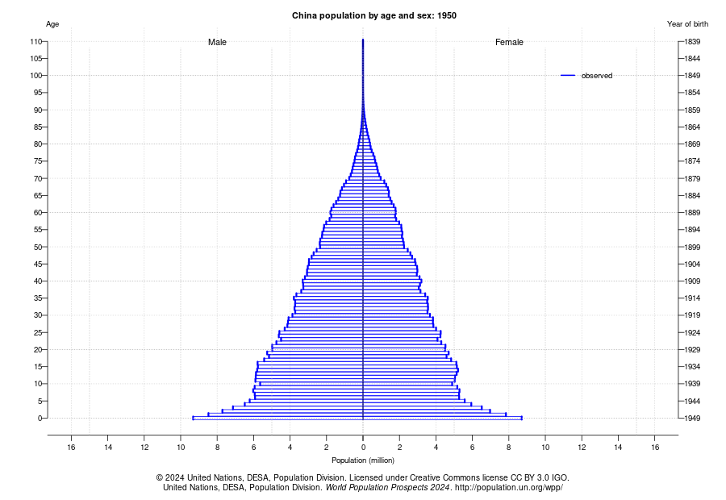
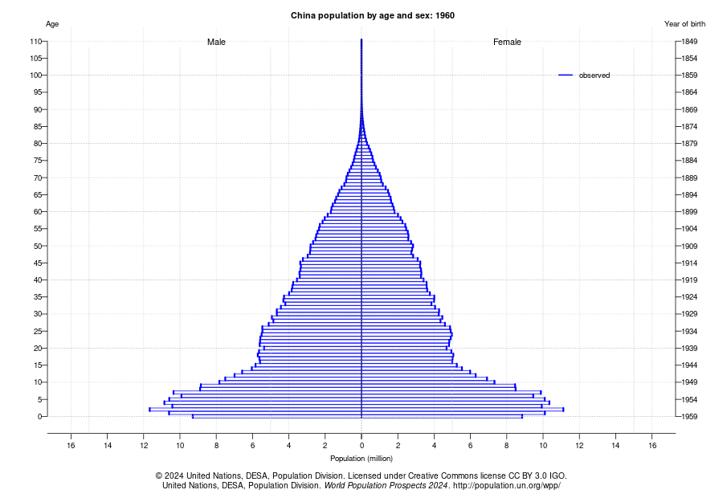
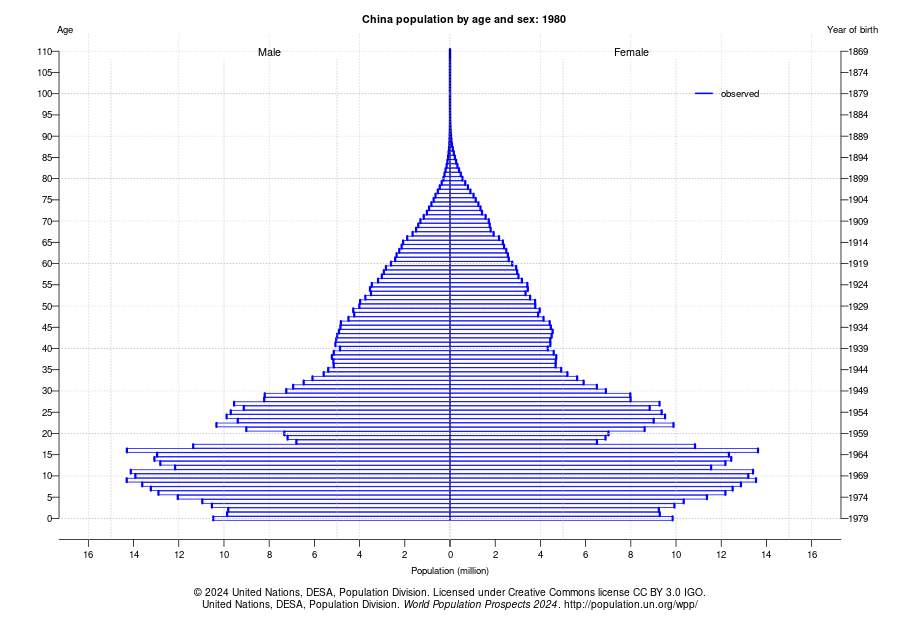
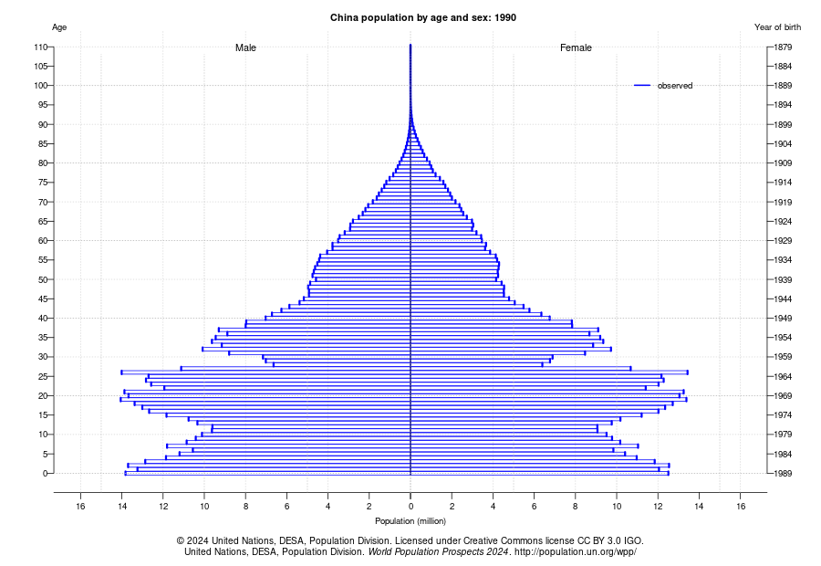
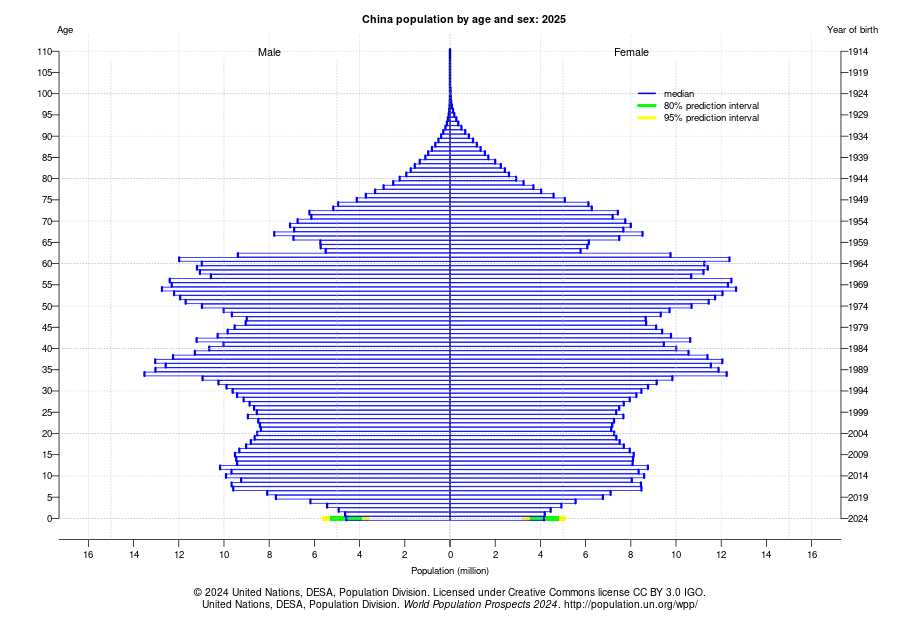
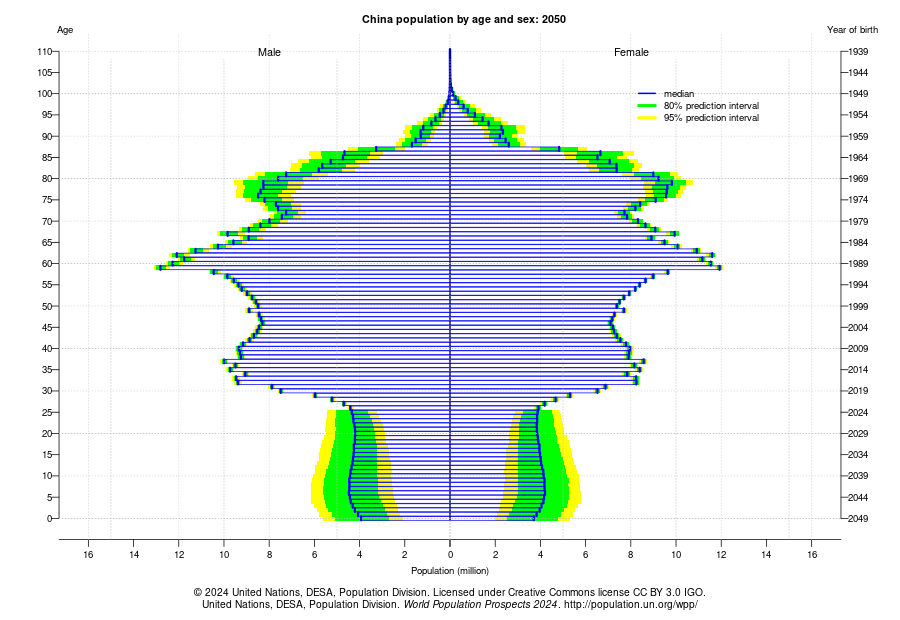
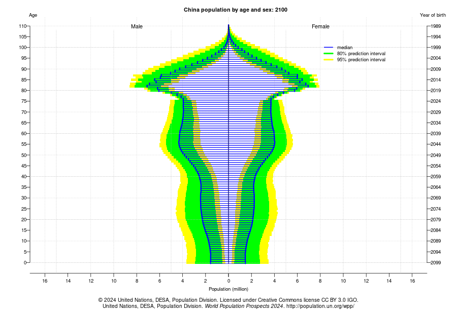

Not by war. Not by fire. But by forgetting to create life.
The world was not always fading.
There was laughter in the fields. Cradles in the corners of every home.
Children ran toward the horizon, not away from it.
The sky was not lonely. The night was not silent.
We had futures wrapped in blankets. Names chosen before we met them.
We were alive. And we knew how to stay that way.
It’s not that they forgot to create life.
It’s that the world demanded so much of them,
there was nothing left to give.
👩🏽🍼 Women especially.
They are told:
Be career-driven. Be strong. Be beautiful. Be independent. Be self-sacrificing. Be the caregiver. Be everything.
And no one stops to ask:
“Where is she supposed to find room for life?”
💔 It’s not forgetfulness.
It’s exhaustion — a culture that breaks the vessel, then blames her for not pouring out more.
Here is the truth:
Many are not choosing a child-free life — they are surviving a system that punishes motherhood.
🌱 And in truth:
This is not a rebuke. This is not a guilt offering. This is a lament.
And a call to remake the world — so that women may rest, and life may return.
Throughout history, humanity’s great fears have been of visible catastrophes: war, plague, famine, and natural disaster.
Yet today, one of the clearest warnings ever given to civilization comes not from scenes of violence or destruction, but from something nearly invisible: the silent disappearance of future generations.
Elon Musk, a man known for daring to dream beyond Earth, has repeatedly sounded this alarm:
Humanity is not dying because of war.
It is dying because it has stopped believing in itself.
Population collapse is already underway. In these pages, we explore the truth, the consequences, and the call to rise again.
What follows is not merely a trend. It is the slow unmaking of the human future.
Every civilization must replace itself to survive. The number is not mysterious — it is 2.1 births per woman.
Anything less is decline. Anything less is the beginning of death.
When a society falls below this threshold for multiple generations, it enters a spiral of demographic collapse — fewer children, fewer workers, fewer mothers. An aging population. A shrinking future.
It begins quietly — in boardrooms and bedrooms — and ends in empty cities and silent nurseries.


These are not abstract numbers. These are the echoes of unborn generations. These are the indicators of a world that has lost faith in its own continuation.
What happens when a people no longer believe in tomorrow?
Once, humanity stood on a foundation of youth — wide, fertile, and full of tomorrow.
Children outnumbered the old.
The young bore the burden of the future.
Elders were few — and deeply honored.
But now, in nation after nation, the pyramid has flipped.
There are more grandparents than grandchildren.
More funerals than births.
More walkers than strollers.
This is not poetry. It is mathematics.
What once was theory is now reality.
Civilization is shrinking — not by plague or war,
but by cost, fatigue, and forgetting how to begin.
Why does Japan collapse faster than Korea?
Because Japan began falling first — its birthrate sank in the 1970s.
Korea’s plunge came later. But the wave now crashes there too.
Once the pyramid of youth and promise, China now wears the shape of its sorrow. Each decade tells a truth — shaped not by war, but by policy. This is a story of abundance reversed. Of silence at the cradle. Of a future deferred — and now, collapsing.

After decades of war and revolution, China’s pyramid stood tall and healthy in 1950. Wide at the base, narrow at the top — millions of young lives ready to carry the country forward. The birthrate was high, the promise fresh, and the pain of the past buried beneath newborn breath.

The Great Leap Forward became a great collapse. Between 1959 and 1961, millions perished from famine. The pyramid records this horror with a visible wound — a dip where a generation should be. What policy created, absence erased.

In fear of overpopulation, China chose control. One child per family — a mandate that reshaped culture, kinship, and the soul of the nation. The base of the pyramid begins to narrow. What was once abundance now learns restraint — not by choice, but by law.

One generation later, the effects are clear. Fewer children. More imbalance. A gender gap emerges — not only in data, but in mourning. Daughters disappeared. Sons outnumbered. The soul of the nation thinned by selection.

Today’s China has more grandparents than grandchildren. The pyramid tilts. The base is narrow. And even though the one-child policy was repealed, it was too late. Culture does not breed on command — it withdraws, exhausted, afraid.

By mid-century, the top swells with age. The bottom narrows further. China becomes a nation of elders — without youth to sustain them. Dependency soars. Innovation slows. Cities hollow out. Ghost schools remain.

A future of inversion. A country top-heavy, brittle, and alone. Population nearly halved from its peak. The base — a whisper. The top — a cry. No policy can undo a century of subtraction. This is not a chart. It is a requiem.
China is not collapsing because of famine.
Not war.
Not disease.
China is collapsing because it followed a lie —
That fewer children meant a stronger nation.
The numbers did not fall by chance.
They were pushed.
Mao Zedong rises. The People’s Republic is born.
Individual families are consumed by collective vision.
The state becomes mother, father, and future.
30 million souls vanish under the banner of progress.
Fields die. Trust dies. Entire provinces starve in silence.
The wombs of the survivors will never forget.
The most radical population policy in human history begins.
One child — or lose your job.
One child — or face forced abortion.
One child — or disappear.
Generations complied.
And now, there is no one left to continue.
Ultrasounds and sonograms become instruments of selection.
Millions of daughters are never born.
A generation of men will grow up alone.
China’s population crests — and begins its silent descent.
The government hides it.
But the pyramid has already cracked.
The Two-Child Policy is announced.
But the people do not return.
Raising a child is now too expensive. Too stressful. Too lonely.
The soul of motherhood has been replaced with productivity reports.
The fertility rate falls below 1.0.
Even propaganda cannot spin it.
There are not enough strollers left to sell hope.
China will fall below 750 million.
More graves than cradles.
A nation built for a billion
now echoing with the silence of no one left to inherit it.
This is not a tragedy of chance.
It was scripted. Calculated. Enforced.
And now the silence is complete.